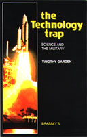

|  | |
Can Deterrence Last?Peace through a Nuclear Strategyby Group Captain Timothy Garden Published Buchan & Enright, London 1984 |
The Technology TrapScience and The Militaryby Air Commodore Timothy Garden Published by Brassey's, London 1989 |